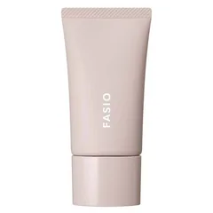

朝の手間を減らしたい人

コーセー FASIO
エアリーステイ BB ティント モイスト 02 ライトベージュ 30g
30g
¥1,320税込・出典掲載価格
選び方と声
- 選ぶ条件：朝は5分しかなく、薄づきで自然になじませたい人。商品ページの表記は、日やけ止め・化粧下地・ファンデーションが1本、SPF35・PA+++、乾燥くずれプルーフ。
- お客様のご意見には、使い心地と伸びの良さを評価する声、自然になじむ・ツヤ感も少しある、という声があった
気になる声気になる点：乾燥が気になるという指摘があり、テクスチャは意見が分かれている。しっかり隠したい人には物足りない場合がある。冬にかなり乾く人は、先にスキンケアでうるおいを足してから
販売価格・容量・送料はリンク先でご確認ください